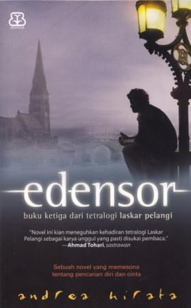

Andrea Hirata
Andrea Hirata Seman Said Harun atau lebih dikenal sebagai Andrea Hirata lahir pada 24 Oktober 1966 merupakan novelis Indonesia yang berasal dari Pulau Belitung, provinsi Bangka Belitung. Novel pertamanya adalah Laskar Pelangi yang menghasilkan tiga sekuel.
Tetralogi Laskar Pelangi

Laskar Pelangi adalah novel pertama karya Andrea Hirata yang diterbitkan oleh Bentang Pustaka pada tahun 2005. Novel ini bercerita tentang kehidupan 10 anak dari keluarga miskin yang bersekolah (SD dan SMP) di sebuah sekolah Muhammadiyah di Belitung yang penuh dengan keterbatasan. Mereka bersekolah dan belajar pada kelas yang sama dari kelas 1 SD sampai kelas 3 SMP, dan menyebut diri mereka sebagai Laskar Pelangi. Pada bagian-bagian akhir cerita, anggota Laskar Pelangi bertambah satu anak perempuan yang bernama Flo, seorang murid pindahan. Keterbatasan yang ada bukan membuat mereka putus asa, tetapi malah membuat mereka terpacu untuk dapat melakukan sesuatu yang lebih baik.

Dalam novel Sang Pemimpi, Andrea Hirata bercerita tentang kehidupannya di Belitong pada masa SMA. Tiga tokoh utama dalam karya ini adalah Ikal, Arai dan Jimbron. Ikal tidak lain adalah Andrea Hirata sendiri, sedangkan Arai Ichsanul Mahidin adalah saudara jauhnya yang menjadi yatim piatu ketika masih kecil. Arai disebut simpai keramat karena dalam keluarganya ia adalah orang terakhir yang masih hidup dan ia pun diangkat menjadi anak oleh ayah Ikal. Jimbron merupakan teman Arai dan Ikal yang sangat terobsesi dengan kuda dan gagap bila sedang antusias terhadap sesuatu atau ketika gugup. Ketiganya melewati kisah persahabatan yang terjalin dari kecil hingga mereka bersekolah di SMA Negeri Bukan Main, SMA pertama yang berdiri di Belitung bagian timur.

Berbeda dengan latar cerita dari Laskar Pelangi dan Sang Pemimpi, Edensor mengambil latar di luar negeri saat tokoh-tokoh utamanya, Ikal dan Arai mendapat beasiswa dari Uni Eropa untuk kuliah S2 di Prancis. Dalam Edensor, Andrea tetap dengan ciri khasnya, menulis kisah ironi menjadi parodi dan menertawakan kesedihan dengan balutan pandangan intelegensia tentang culture shock ketika kedua tokoh utama tersebut yang berasal dari pedalaman Melayu di Pulau Belitong tiba-tiba berada di Paris. Mimpi-mimpi untuk menjelajah Eropa sampai Afrika dan menemukan keterkaitan yang tak terduga dari peristiwa-peristiwa dari masa lalu mereka berdua. Dan pencarian akan cinta sejati menjadi motivasi yang menyemangati penjelajahan mereka dari bekunya musim dingin di daratan Rusia di Eropa sampai panas kering di gurun
Nama: Shafanissa Naulia Zahrah
NIM: 11210251000118
Kelas: 5A
Program Studi: Ilmu Perpustakaan